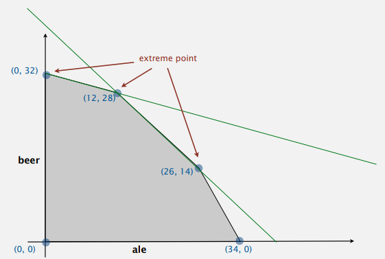
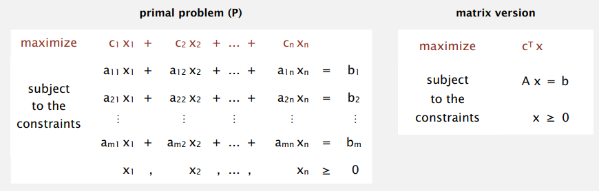
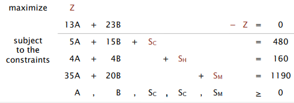
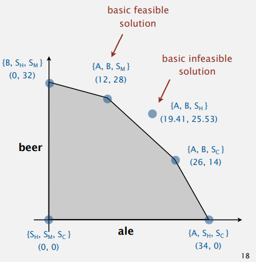
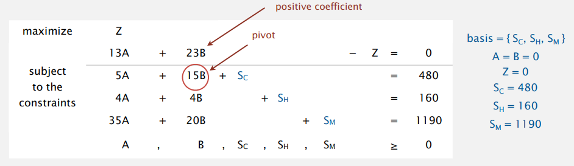
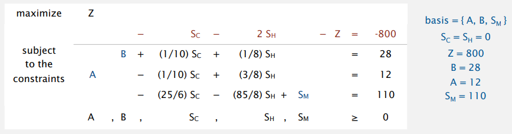
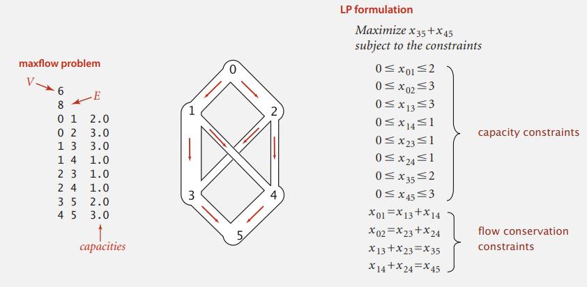
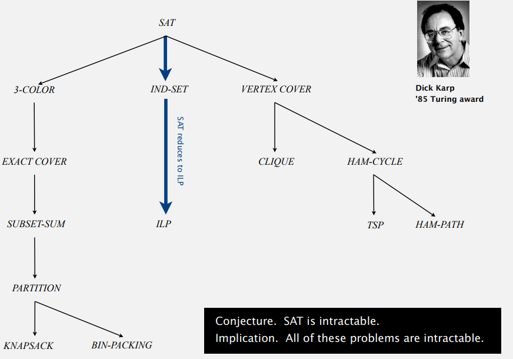
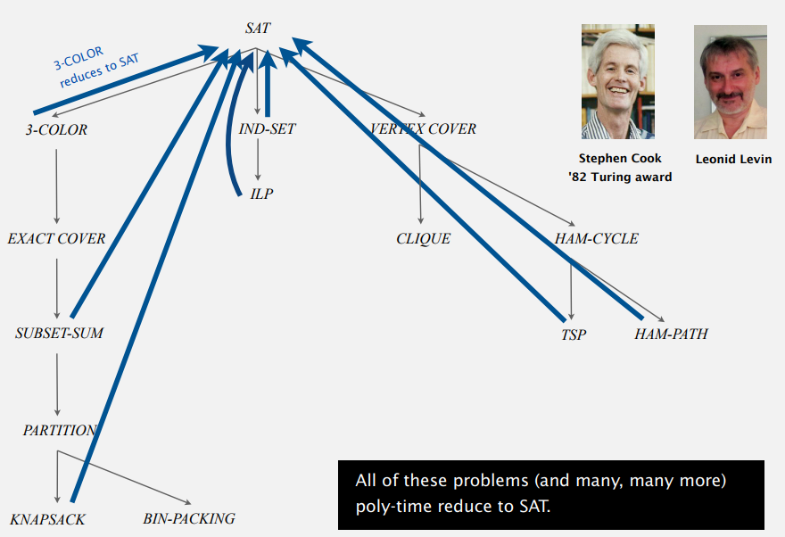

Algorithms II, Princeton University, P8
That's all, folks: just keep searching!
[2023.9.2 - 23:19] 最感动的一集。风雨阵阵敲打着窗户，俏皮欢快的 Find the Longest Path 从电脑中传出，紧随其后的是 Sedgewick 教授潇洒的挥手告别。我无比庆幸这个世界是 \(P\neq NP\) 的，若非如此，找到人生的 longest path 将不费吹灰之力；那该是一个多么无聊的世界！
Algorithms I & II, Princeton 系列笔记的 P8 部分。终于来到最后一节了！这一节从俯瞰 (bird's-eye view) 的角度对 computational theory 做了一个理论上的总结，让我们得以一瞥算法领域的“上层建筑”。
- The idea of reductions (归约).
- Linear programming problem (线性规划问题).
- Intractability (可解性/难解性)，包括著名的 \(P\neq NP\) 猜想。
在课程的尾声再提一下：本课程所有 10 个 projects 的代码实现存放在 ThisisXXZ/Algorithms-Princeton - GitHub 中，仅供参考。
This article is a self-administered course note.
It will NOT cover any exam or assignment related content.
Reduction
Reduction (归约) 的概念在学习加密学时已经有了较为深入的接触；在这节课中再见面令我十分惊喜。这更证明了 reduction 这一概念的普适性与强大。
我们定义 cost of solving \(X\) = total cost of solving \(Y\) + cost of reduction.
- total cost of solving \(Y\): perhaps many calls to \(Y\) on problems of different sizes.
- cost of reduction: preprocessing and postprocessing.
举例来说，假设问题 \(X\) 为 finding the median，问题 \(Y\) 为 sorting，那么解决问题 \(X\) 的代价为 \(N\log N\) (cost of sorting) \(+1\) (cost of reduction).
最常见的一种 reduction 关系是 linear-time reduction，它几乎涵盖了目前我们接触过的所有 reduction。
Lower Bound Determination
linear-time reduction 关系能够帮助我们找出某些算法的 lower bounds；通常情况下这些算法的 lower bounds 难以进行证明。例如， How to convince yourself no linear-time convex hull algorithm exists?
- [hard way] Long futile search for a linear-time algorithm.
- [easy way] Linear-time reduction from sorting.
凸包问题能够线性归约到 sorting 问题，而我们知道任何 compare-based sorting algorithm 都需要至少 \(\sim N\log{N}\) 次比较；由此能够断言凸包问题的 lower bound 同样为 \(\Omega(N\log{N})\)。
Classifying Problems
根据问题的计算复杂度对其进行归类是 linear-time reduction 思想的另一个重要应用。具有相同计算复杂度 (computational complexity) 的问题集合属于同一个 complexity class。举例来说：
- integer multiplication 与 integer division, integer square, and integer square root 问题属于同一个 complexity class，因为它们具有相同的复杂度 (order of growth: \(M(N)\) ).
- matrix multiplication 与 matrix inversion, matrix determinant, system of linear equations, LU decomposition, and least squares 问题属于同一个 complexity class，因为它们具有相同的复杂度 (order of growth: \(MM(N)\) )
那么我们如何使用 linear-time reduction 来证明问题 \(X\) 与 \(Y\) 具有相同的复杂度呢？(Desiderata)
- First show that problem \(X\) linear-time reduces to \(Y\).
- Second, show that \(Y\) linear-time reduces to \(X\).
- Conclude that \(X\) and \(Y\) share the same complexity even if we don't know what it is.
Linear Programming
线性规划问题在高中数学中就已经接触过，确实是一个具有极大应用价值的问题。在介绍 LP 问题的解法之前，我们先引入一个可供把玩的例子：brewer's problem.
- 仓库中有 480 单位的玉米，160 单位的啤酒花 (hops) 与 1190 单位的麦芽 (malt)。
- 酿造一桶爱尔啤酒 (ale) 需要 3 单位玉米，4 单位啤酒花与 35 单位麦芽。
- 酿造一同啤酒 (beer) 需要 15 单位玉米，4 单位啤酒花与 20 单位麦芽。
- 一桶爱尔啤酒的利润为 \$13；一桶啤酒的利润为 \$23。
试问如何最大化酿酒厂的利润？根据高中数学的思路，我们设酿酒厂决定酿造 \(x\) 桶爱尔啤酒，\(y\) 桶啤酒。我们要求 objective function (目标函数) \(13x+23y\) 的值最大。并遵循以下 constraints:
- corn: \(5A+15B\leq 480\).
- hops: \(4A+4B\leq 160\).
- malt: \(35A+20B\leq 1190\).
- variable constraints: \(A,B\geq 0\).
在以 ale 与 beer 为轴的二维平面中，每个 constraint (inequalities) 划分出一个 halfplane，这些 halfplanes 的交集是一个 convex polygon (凸多边形)，我们称其为 feasible region。使得 objective function 最大的点一定位于 feasible region 的某个 extreme point (极点) 上。

Linear program 的 standard form (though no widely agreed) 如下：
- Maximize linear objective function of \(n\) nonnegative variables, subject to \(m\) linear equations.
- Input. real numbers \(a_{ij}, c_j, b_i\).
- Output. real numbers \(x_j\).

可以发现之前我们对 brewer's problem 的描述是不标准的；所有的 constraints 都是不等式而非等式，因此无法构造对应的矩阵。如何用 standard form 来描述 LP 问题，[stay tuned]。
Simplex Algorithm
如果我在高中，解决 LP 问题的方法就是构造出 feasible region 并尝试所有的 extreme points 并取最大值作为 objective function 的答案。
然而，如果采用这个朴素的做法，对应的程序将十分复杂；我们将需要分别求出凸多边形与其所有的极点。Simplex algorithm 则从线性代数的角度对该问题进行了进一步抽象，大大简化了程序实现。
首先，我们通过向 inequality constraints 中加入 slack variable 的形式把一般描述的 LP 转化为 standard form。以 brewer's problem 为例：
- Add variable \(Z\) and equation corresponding to objective function.
- Add slack variable to convert each inequality to equality.
- Now a 6-dimensional problem (\(A,B,S_C,S_H,S_M,Z\)).

将 LP 问题写成标准形式，再提取变量和系数，所形成的矩阵称为 simplex tableaux (单纯形表)。如何理解单纯形表与 slack variables \(S_C,S_H,S_M\) 的含义？我们还是结合图像来说明。

二维 feasible region 的每个极点都受到两个 constraints 的束缚：\(S_C,S_H,S_M\) 这三个 slack variables 就是 constraints 的一种具象表现。例，当 \(S_H=S_M=0\) 时 (受 hops 与 malt 束缚)，对应的极点为 \((26,14)\)。
Simplex algorithm 利用了这一性质，结合线性代数对每个极值点进行遍历。其基本思想是：
- Start at some extreme point (usually origin).
- Pivot from one extreme point to an adjacent one (never decreasing objective function).
- Repeat until optimal.
首先，根据线性代数中的相关知识，我们知道 A basis is a subset of \(m\) of the \(n\) variables. 通过在单纯形表中选择特定的 basis 可以得到其对应的 Basic feasible solution (BFS).
- Set \(n-m\) nonbasic variables to \(0\), solve for remaining \(m\) variables.
- Solve \(m\) equations in \(m\) unknowns.
- If unique and feasible (lies in feasible region) \(\to\) BFS.
- BFS \(\iff\) extreme point.
既然在单纯形表中选择 basis 能够计算出 BFS，而 BFS 又对应极点，那么遍历每一个极点就相当于不断地在单纯形表中选择不同的 basis。在线性代数中，这种操作称为基变换。在建立单纯形表之后，持续对其进行基变换，就能实现遍历所有极点的效果。下面我们来具体走几个流程：
初始化：Initial basic feasible solution - 从原点 \((0,0)\) 开始遍历。
- Start with slack variables \(\{S_C, S_H,S_M\}\) as the basis.
- Set non-basic variables \(A\) and \(B\) to \(0\).
- 3 equations in 3 unknowns yields \(S_C=480,S_H=160,S_M=1190\).
接下来我们开始遍历相邻的极点：具体的操作是选择一个变量作为 pivot，在进行对应的矩阵变换 (消去其他方程，包括 objective function 中的该变量) 后将该变量替换 basis 中原有的某个变量。如何选择作为 pivot 的变量？在这个例子中，下一个作为 pivot 的变量是 \(B\)。

- Why pivot on column 2 (corresponding to variable \(B\))?
- [Bland's rule] Its objective function coefficient is positive. (因此能给 \(Z\) 带来正收益: each unit increase \(B\) from \(0\) increases objective value by \(\$23\).
- Therefore pivoting on column 1 (corresponding to \(A\)) also OK.
- Why pivot on row 2?
- Preserves feasibility by ensuring RHS \(\geq 0\).
- [Minimum ratio rule] \(\min \{ \underline{480/15},160/4,1190/20\}\). 我们选取 ratio 最小的行作为基准进行消元。如果选择 row 3 或者 4，得到的解将是 basic infeasible solution (见上图)。
当 objective function 中所有变量对应的系数 (coefficient) 均小于 \(0\) 时，我们停止 pivoting (也因此停止了对极点的遍历)。能够证明此时的 basis feasible solution 是全局最优解。同样的例子，此时我们有：

- In particular, \(Z=800-S_C-2S_H\).
- Thus, optimal objective value \(Z^*\leq 800\) since \(S_C,S_H\geq 0\).
- Current BFS has value 800 (since \(S_C=S_H=0\)) \(\to\) optimal.
一个 best practice 建议: Do NOT implement simplex algorithm yourself!
LP Reductions
LP 问题的应用范围远比想象中大；我们目前接触过的很多问题都能抽象为 LP 问题的形式。将某个问题抽象 (或者说，归约到) 为 LP 问题模型的标准步骤如下：
- Identify variables.
- Define constraints (inequality and equations).
- Define objective function.
- Convert to standard form.
将问题转化为 LP standard form 这一步有许多小 tricks，我们之前看到的通过 slack variables 将 inequality 转化为 equations 是其中的一个。
- Minimization problem. Replace \(\min (13A+15B)\) with \(\max-13A-15B\).
- \(\geq\) constraints. Replace \(4A+4B\geq 160\) with \(4A+4B-S_H=160, S_H\geq 0\).
- Unrestricted variables (未规定 \(B\geq 0\)). Replace \(B\) with \(B=B_0-B_1, B_0\geq 0, B_1\geq 0\).
再探最大流问题：实际上，maxflow problem can be modeled as a linear program.
- Variables. \(x_{vw}=\) flow on edge \(v\to w\).
- Constraints. Capacity and flow conservation.
- Objective function. Net flow into \(t\).

这给我们解决问题提供了一个新的 insight: 对于任意的 optimization problem 例如最大流，二分图最大匹配，最短路问题，最小生成树问题等等，我们有两种解决问题的思路：
- Approach 1: Use a specialized algorithm to solve it. Fast but vast literature on algorithms.
- Approach 2: Use linear programming.
- Many programs are easily modeled as LPs.
- Commercial solvers can solve those LPs.
- Might be slower than specialized solution (but we might not care).
Turing Machines
之前我们已经接触过一个简单的计算模型 (A simple model of computation): DFAs. 但 DFAs 难以执行除 pattern matching 外的计算任务。我们不禁要问：Is there a more powerful model of computation?
答案是肯定的：大名鼎鼎的 Turing machines 是一种 simple and universal model of computation. 构成其的基本单元仅仅是一个无限长的纸带 (tape) 与读写头 (tape head)。
Tape.
- Store input, output, and intermediate results.
- One arbitrarily long strip, divide into cells.
- Finite alphabet of symbols.
Tape head.
- Points to one cell of tape.
- Reads a symbol from active cell.
- Writes a symbol to active cell (according to the table).
- Moves one cell at a time.
注意，我们在这里采用的名词是 thesis (论题)，而不是严谨的 mathematical theorem (定理)。这是因为 Church-Turing thesis is a statement about the physical world and not subject to proof.
虽然难以被 (数学意义上的) 证明，论题是可以被证伪 (falsified) 的。然而自从 Church-Turing thesis 被提出以来还没有任何 counterexamples 被发现。
并且许多已被发现的 models of computation turned out to be equivalent，这可以作为 Turing machines universal 性质的佐证。(注：We use simulation to prove models equivalent)
Church-Turing thesis 有什么意义呢？它揭示了图灵机已经是一个通用的计算模型，因此我们：
- No need to seek more powerful machines or languages.
- Enables rigorous study of computation (in this universe).
Intractability
Church-Turing thesis 解决了我们对是否存在 general-purpose computer 的疑问；在此基础之上，计算机科学家们开始探寻 the limits on the power of digital computers.
对于某个问题，我们如何判断它是否能被计算机“高效地”解决？什么样的算法能被视为“高效的”？
- Measure running time as a function of input size \(N\).
- Useful in practice ("efficient") = polynomial time (\(aN^b\)) for all inputs.
In practice，只有常数 \(a,b\) 都比较小的 poly-time 算法 (如 \(3N^2\)) 才能应用到规模较大的问题上。常见的非 poly-time running time 有：
- Factorial running time: \(N!=N(N-1)..\times2\times1\).
- Exponential growth: \(ab^N\). Exponential growth dwarfs technological change.
我们的 desiderata: Prove that a problem is intractable；然而这样的证明通常十分困难：very few successes have been made. 现有的 two problems that probably require exponential time.
- Given a constant-size problem, does it halt in at most \(K\) (input size = \(c+\lg{K}\)) steps?
- Given \(N\)-by-\(N\) checkers board position, can the first player force (forced capture rule) a win?
Search Problems
LSOLVE (Linear Solve), LP (Linear Programming), ILP (Integer Linear Programming), SAT (Boolean Satisfiability Problem) 常常被称为四大基本问题 (four fundamental problems)，这是因为许多计算问题都能归约到这四个问题上。因此，研究这四个问题有助于我们证明某个其他问题的 intractability 性质。
- LSOLVE. Given a system of linear equations, find a solution.
- LP. Given a system of linear inequalities, find a solution.
- ILP. Given a system of linear inequalities, find a 0-1 solution.
- SAT. Given a system of boolean equations, find a binary solution.
其中 LSOLVE (Gaussian elimination \(\sim N^3\)) 与 LP (Ellipsoid algorithm) 均存在 poly-time algorithms，而对于 ILP 与 SAT，No poly-time algorithm known or believed to exist. 因此我们可以 (暂时) 认为 ILP 与 SAT 问题是 intractable 的。
这四大基本问题均属于 search problem：该类问题的重要特征之一是我们能很容易地判断某个解的正确性。以四大问题的某个解 \(S\) 为例，我们只需要 plug in values and verify each equation。
关于 search problem 的定义，可以看看这个帖子下的讨论。说到底这个定义并不是非常严谨，但大多数情况下我们都可以通过 common sense 来进行判断。
我们如何利用这四大基本问题来证明其他问题的 intractability？答案是通过 reduction。在目前的计算理论体系中，SAT 问题可以说是许多 intractable 问题的源头 [stay tuned for NP-completeness]。
目前来讲，对于 SAT 的一个 general instance with \(n\) variables，除了使用 \(\sim 2^n\) 的 exhaustive search 算法之外没有其他效率更高的算法。No poly-time algorithm for SAT (即，SAT is intractable) 已经成为了一个得到共识的 conjecture。
基于这个 conjecture，我们可以得出这样一个结论：If SAT poly-time reduces to \(Y\), then we conclude that \(Y\) is (probably) intractable. (注意，这里是 poly-time reduction 而非 linear-time reduction)

P v.s. NP
从实践意义的角度来定义，P 与 NP 分别是：
- NP. What scientists and engineers aspire to compute feasibly.
- P. What scientists and engineers do compute feasibly.
从定义上来看，P 是 NP 的一个子集；四大问题显然均属于 NP，但只有 LSOLVE 与 LP 问题属于 P。NP 的 N 来自于 Nondeterministic: 之前我们在介绍 NFA 的时候已经简单了解过。Turing machine 同样也分为：
- Determinisitc: state, input determines next state.
- Nondeterministic: more than one possible next state.
对于 nondeterministic machine, it can guess the desire solution. 据此我们引入 P 与 NP 的另一个定义：
- P. Search problems both solvable and verifiable on a deterministic TM.
- NP. Search problems solvable in poly-time on a nondeterministic TM and verifiable in poly-time on a deterministic TM.
非确定性图灵机 (nondeterministic TM, NTM) 是一个理论模型，在 natural world 中 (至少到目前为止) 是无法实现的。我们可以将其理解为一种算法：It at every step tries all possible steps and chooses the best possible next step, therefore guessing the desired solution.
NTM 这一概念存在的意义就是判断某个问题 \(X\) 是否属于 NP 问题：若我们能设计出一个能在 poly-time 内解决 \(X\) 的 NTM，那么 \(X\) 就属于 NP 问题。本质上来讲，verifying a solution in polynomial time with a TM is equivalent to solving in polynomial time with NTM. 这个帖子中的讨论值得参考。
- Supporting evidence. True for all physical computers.
- Implication. Suffices to focus on improving implementation of existing designs to make future computers more efficient.
Extended Church-Turing thesis 使我们的目光投向 existing designs，从而引出了计算机理论科学中最出名，最基本，最引人浮想联翩且至今仍悬而未决的问题 (the central question)：Does P = NP ?
- If P \(=\) NP... Polynomial-time algorithms for SAT, ILP, TSP, FACTOR, RSA, Diffie-Hellman... Most existing rules will collapse.
- If P \(\neq\) NP... Would learn something fundamental about our universe.
- Overwhelming consensus: P \(\neq\) NP.
为什么人们普遍相信 P \(\neq\) NP? 因为对于人类而言，验证一个某个问题解的正确性通常比解决某个问题简单许多。欣赏一首乐曲比创造一首乐曲更容易；验证一个定律比提出一个定律更容易，使用一个装置比发明一个装置更容易……如果 P \(=\) NP，人类在经验主义下得到的这些结论将会被彻底的颠覆。
反證法。設 P = NP。令 y 為一個 P = NP 的證明。證明y可以用一個合格的電腦科學家在多項式時間內驗證，我們認定這樣的科學家的存在性為真，但因為 P = NP，該證明y可在多項式時間內由這樣的科學家發現，但是這樣的發現還沒有發生（雖然這樣的科學家試圖發現這樣的一個證明），我們得到矛盾。
NP-Completeness
Proposition. [Cook 1971, Levin 1973] SAT is NP-complete.
Extremely brief proof sketch.
- Convert non-deterministic TM notation to SAT notation.
- If you can solve SAT, you can solve any problem in NP.
这是一个非常重要的发现：SAT 从此成为了 NP 问题的核心，弱点；攻破了它就相当于解决了 P \(=\) NP 问题。
- SAT captures difficulty of whole class NP.
- Poly-time algorithm for SAT iff P \(=\) NP.
- No poly-time algorithm for some NP problem \(\to\) none for SAT.

在 intractability 一节中，我们介绍由 Karp 发现的一系列问题 (Karp's problems)，它们均能够 reduce from SAT (箭头由 SAT 出发)；而 Cook-Levin 所发现的 SAT 的 NP-completeness 性质则告诉我们所有的 NP 问题均能 reduce to SAT (箭头指向 SAT)。
结合 Karp 与 Cook-Levin 的理论，我们可以得到另一个重要的发现：所有的 Karp's problems 均能与 SAT 互相 poly-time reduce，因此它们是等价的；这意味着 Every Karp's problem is NP-complete. 或者这么说：We can replace SAT with any of Karp's problems.
Karp's problems: SAT, ILP, HAMILTON-PATH, 3D-ISING, 3-COLOR, SUBSET-SUM...
我们再次对已经 cover 的概念进行总结：
- P. Class of search problems solvable in poly-time (on deterministic TM).
- NP. Class of all search problems, some of which seem wickedly hard.
- NP-complete. Hardest problems in NP.
- Intractable. Problems with no poly-time algorithm.
Coping with Intractability
如何解决 intractability？一个具有 intractability 性质的问题一定没有应用价值吗？
Exploiting intractability.
- 事实上，现代加密学的可靠性几乎全部建立在某些问题的 intractability 上 [具体请食用 COMP3357 的 hard problems 一节]，包括 FACTOR, RSA, DLOG 与 Diffie-Hellman 等等。
- [Shor 1994] 量子计算机能够在 \(n^3\) 步内 factor an \(n\)-bit integer - 我们还能相信 extended Church-Turing thesis 吗？
Coping with intractability.
- Solve arbitrary instances of the program: special cases may be tractable.
- Solve the problem to optimality: 采取近似 non-determinism 的方法；develop a heuristic/approximation algorithm, and hope it produces a good solution.
- Solve the problem in poly-time in pratical case.
Reference
This article is a self-administered course note.
References in the article are from corresponding course materials if not specified.
Course info:
Algorithms, Part 2, Princeton University. Lecturer: Robert Sedgewick & Kevin Wayne.
Course textbook:
Algorithms (4th edition), Sedgewick, R. & Wayne, K., (2011), Addison-Wesley Professional, view
Others: